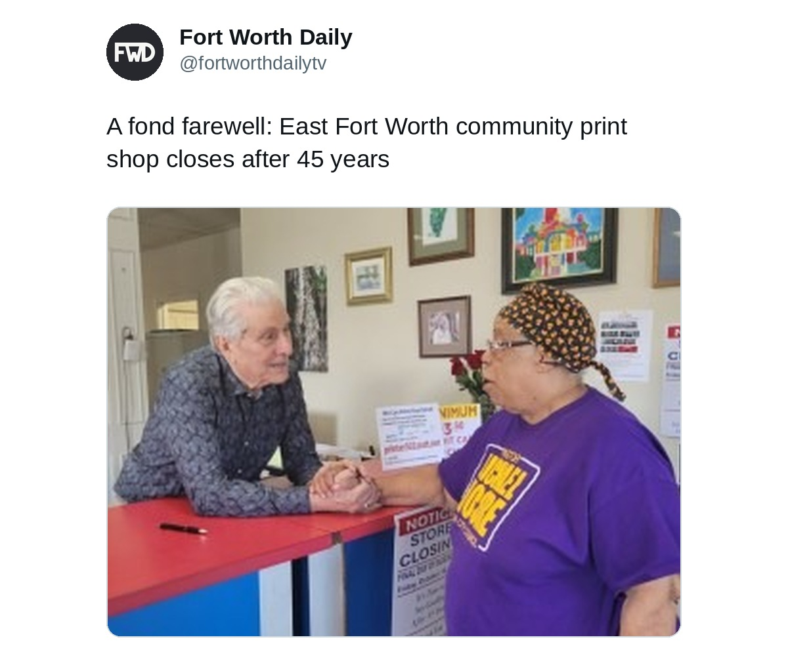

FWD
Fort Worth Daily
Just now · 🌎 · community · template writer
Just now · 🌎 · community · template writer
Kwik Kopy Printing on Handley Drive was a community staple for decades, offering friendly service and fair prices. The final day of a popular east Fort Worth print shop wasn’t marked with a cake or a party, but there were plenty of hugs and tears. Longtime customers said their goodbyes to the staff at Kwik Kopy Printing, 1850 Handley Drive, on Oct. 16. The business served east side residents for more than 45 years, evolving into a neighborhood print shop where community flyers, church programs and other materials were made.

FWD
story + scoring
{
"source": "Fort Worth Report",
"kind": "rss",
"score": 1.5407,
"relevance": 2,
"url": "https://fortworthreport.org/2026/11/27/a-fond-farewell-east-fort-worth-community-print-shop-closes-after-50-years/",
"image_license": "cc-by-nd",
"image_credit": "Photo: Eric E. Garcia | Fort Worth Report (CC BY-ND)"
}